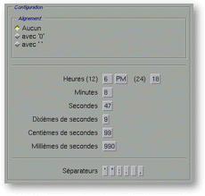
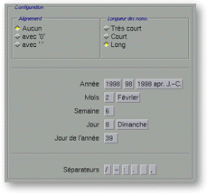

<!-- Documentation XQuad (c)1995-2000 AXENE contact axene@axene.org>
<html>

<head>
<title>Mise en forme des nombres: Heures et Dates.</title>
</head>

<body BGCOLOR="#FFFFFF" BACKGROUND="Images/back.gif" TEXT="#000000">

<p ALIGN="right">  </p>

<p align="center"><br>
<a NAME="box_hour"></p>

<h2 align="center">Configuration des heures</h2>
</a>

<p>Quand le format de nombres sélectionné est du type <i>&quot;Heures&quot;</i> ou <i>&quot;Dates
+ Heures&quot;</i>, la barre horizontale en haut de la partie droite de la boîte contient
le bouton <i>&quot;Heures&quot;</i>. Lorsque l'on sélectionne ce bouton, la section <i>&quot;Configuration&quot;</i>
prend la forme suivante&nbsp;: </p>

<p align="center"> <br>
<small><i>Photo d'écran de la section &quot;Configuration&quot;. </i></small></p>

<p><a NAME="preview_hour">Le champ texte de la section &quot;Témoin&quot; peut être
édité. Le rendu de l'heure dans cette section correspond exactement à celui obtenu à
l'affichage dans la feuille de calcul. Lorsque l'on édite ce champ, tout caractère
entré sera retranscrit sans modification à l'affichage. Quand on click sur l'un des
boutons de la section <i>&quot;Configuration&quot;</i>, le label du bouton est inséré
dans le champ <i>&quot;Témoin&quot;</i>. Quand on détruit un caractère qui provient de
l'insertion automatique d'un élément composant une heure (heure, minute, seconde...),
tout le bloc inséré est détruit. </a></p>

<p>Pour entrer un format d'heure, il faut cliquer les boutons représentant les
différents éléments d'heure, ajuster et corriger le rendu du format en éditant le
champ texte de la section <i>&quot;Témoin&quot;</i>. </p>

<p>Cette section est composée de haut en bas par&nbsp;: 

<ul>
  <li><a NAME="frame_alignment_1">la sous-section <i>&quot;Alignement&quot;</i>. Les trois
    boutons de cette sous-section permettent de <b>choisir si l'on veut qu'un élément
    d'heure soit toujours affiché avec le même nombre de chiffre</b> ou non, et <b>quel
    caractère utilisé pour remplir</b> le cas échéant. Par exemple, dans chaque heure, les
    minutes peuvent être affichées avec un ou deux chiffres. </a><br>
    &nbsp;<ul>
      <li>le bouton <i>&quot;Aucun&quot;</i> permet de <b>ne pas choisir d'alignement</b>. Les
        différents éléments composant une heure seront affichés avec le minimum de chiffres. <br>
        &nbsp;</li>
      <li>le bouton <i>&quot;avec '0' &quot;</i> permet d'<b>aligner les nombres et de remplir
        avec des 0</b>. Les différents éléments composant une heure seront affichés avec un
        maximum de chiffres, et ceux éventuellement manquants seront ajoutés en 0. <br>
        &nbsp;</li>
      <li>le bouton <i>&quot;avec ' ' &quot;</i> permet d'<b>aligner les nombres et de remplir
        avec des espaces.</b> Les différents éléments composant une heure seront affichés avec
        un maximum de chiffres, et ceux éventuellement manquants seront ajoutés en espace. <br>
        &nbsp;</li>
    </ul>
  </li>
  <li><a NAME="hour_area">les trois boutons <i>&quot;Heures&quot;</i> permettent d'<b>insérer
    l'élément heure</b> dans le champ texte témoin. Les trois boutons sont, de gauche à
    droite&nbsp;: </a><ul>
      <li>l'heure sur une demi-journée (12 heures). Ainsi, 17h correspondra à 5h (de
        l'après-midi). Le label de ce bouton est dépendant du paramètre <i>&quot;Alignement&quot;</i>.
        <br>
        &nbsp;</li>
      <li>le signe AM / PM. AM pour 'ante meridiem' (avant midi), c'est-à-dire le matin. PM pour
        'post meridiem', c'est-à-dire l'après-midi. <br>
        &nbsp;</li>
      <li>l'heure sur une journée (24 heures). Ainsi 1h de l'après-midi correspondra à 13h. Le
        label de ce bouton est dépendant du paramètre <i>&quot;Alignement&quot;</i>. <br>
        &nbsp;</li>
    </ul>
  </li>
  <li><a NAME="minute_area">le bouton <i>&quot;Minutes&quot;</i> permet d'<b>insérer les
    minutes</b> dans le champ texte témoin. Le label de ce bouton est dépendant du
    paramètre <i>&quot;Alignement&quot;</i>. </a><br>
    &nbsp;</li>
  <li><a NAME="second_area">le bouton <i>&quot;Secondes&quot;</i> permet d'<b>insérer les
    secondes</b> dans le champ texte témoin. Le label de ce bouton est dépendant du
    paramètre <i>&quot;Alignement&quot;</i>. </a><br>
    &nbsp;</li>
  <li><a NAME="second_10_area">le bouton <i>&quot;Dixième de secondes&quot;</i> permet d'<b>insérer
    les dixièmes de secondes</b> dans le champ texte témoin. </a><br>
    &nbsp;</li>
  <li><a NAME="second_100_area">le bouton <i>&quot;Centièmes de Secondes&quot;</i> permet d'<b>insérer
    les centièmes de secondes</b> dans le champ texte témoin. Le label de ce bouton est
    dépendant du paramètre <i>&quot;Alignement&quot;</i>. </a><br>
    &nbsp;</li>
  <li><a NAME="second_1000_area">le bouton <i>&quot;Millièmes de Secondes&quot;</i> permet d'<b>insérer
    les millièmes de secondes</b> dans le champ texte témoin. Le label de ce bouton est
    dépendant du paramètre <i>&quot;Alignement&quot;</i>. </a><br>
    &nbsp;</li>
  <li><a NAME="separator_area_1">les six boutons <i>&quot;Séparateurs&quot;</i> permettent d'<b>insérer
    un caractère de séparation</b> dans le champ texte témoin. Les caractères de
    séparation proposés sont les plus fréquemment utilisés pour les formats d'heure. Il
    est équivalent de cliquer sur un de ces boutons ou d'insérer manuellement le même
    caractère directement dans le champ texte témoin. </a></li>
</ul>

<p><br>
<br>
</p>

<hr>

<p><br>
</p>
<a NAME="bnf_date">

<h2 align="center">Configuration des dates </a></h2>

<p>Quand le format de nombre sélectionné est du type <i>&quot;Dates&quot;</i> ou <i>&quot;Dates
+ Heures&quot;</i>, la barre horizontale en haut de la partie droite de la boîte contient
le bouton <i>&quot;Dates&quot;</i>. Lorsque l'on sélectionne ce bouton, la section <i>&quot;Configuration&quot;</i>
prend la forme suivante&nbsp;: </p>

<p align="center"> <br>
<small><i>Photo d'écran de la section &quot;Configuration&quot;. </i></small></p>

<p><a NAME="preview_date">Le champ texte de la section &quot;Témoin&quot; peut être
édité. Le rendu de la date dans cette section correspond exactement à celui obtenu à
l'affichage dans la feuille de calcul. Lorsque l'on édite ce champ, tout caractère
entré sera retranscrit sans modification à l'affichage. Quand on click sur l'un des
boutons de la section <i>&quot;Configuration&quot;</i>, le label du bouton est inséré
dans le champ <i>&quot;Témoin&quot;</i>. Quand on détruit un caractère qui provient de
l'insertion automatique d'un élément composant une date (année, mois, jour...), tout le
bloc inséré est détruit. </a></p>

<p>Pour entrer un format de date, il faut cliquer sur les boutons représentant les
différents élément de date, ajuster et corriger le rendu du format en éditant le champ
texte de la section <i>&quot;Témoin&quot;</i>. </p>

<p>Cette section est composée de haut en bas par&nbsp;: 

<ul>
  <li><a NAME="frame_alignment_2">la sous-section <i>&quot;Alignement&quot;</i>. Les trois
    boutons de cette sous-section permettent de <b>choisir si l'on veut qu'un élément de
    date soit toujours affiché avec le même nombre de chiffres</b> ou non, et <b>quel
    caractère utiliser pour remplir</b> le cas échéant. Par exemple, les jours dans le mois
    peuvent être affiché avec un ou deux chiffres. </a><br>
    &nbsp;<ul>
      <li>le bouton <i>&quot;Aucun&quot;</i> permet de <b>ne pas choisir d'alignement</b>. Les
        différents éléments composant une date seront affichés avec le minimum de chiffres. <br>
        &nbsp;</li>
      <li>le bouton <i>&quot;avec '0' &quot;</i> permet d'<b>aligner les nombres et de remplir
        avec des 0</b>. Les différents éléments composant une date seront affichés avec un
        maximum de chiffres, et ceux éventuellement manquants seront ajoutés en 0. <br>
        &nbsp;</li>
      <li>le bouton <i>&quot;avec ' ' &quot;</i> permet d'<b>aligner les nombres et de remplir
        avec des espaces.</b> Les différents éléments composant une date seront affichés avec
        un maximum de chiffres, et ceux éventuellement manquants seront ajoutés en espace. <br>
        &nbsp;</li>
    </ul>
  </li>
  <li><a NAME="frame_namelength">la sous section <i>&quot;Longueur des noms&quot;</i>. Les
    trois boutons de cette sous-section permettent de <b>choisir la longueur de l'affichage
    des noms</b> de jour de la semaine ou de mois dans l'année. </a><br>
    &nbsp;<ul>
      <li>le bouton <i>&quot;Format très court&quot;</i> permet de <b>choisir un affichage très
        court</b>. Le nom du jour de la semaine ou du mois de l'année sera affiché en 1 ou 2
        lettres (deux lettres quand il peut y avoir confusion). <br>
        &nbsp;</li>
      <li>le bouton <i>&quot;Format court&quot;</i> permet de <b>choisir un affichage court</b>.
        Le nom du jour de la semaine ou du mois dans l'année, sera affiché en 3 lettres. <br>
        &nbsp;</li>
      <li>le bouton <i>&quot;Format long&quot;</i> permet de <b>choisir un affichage long</b>. Le
        nom du jour de la semaine ou du mois de l'année, sera affiché dans son intégralité. <br>
        &nbsp;</li>
    </ul>
  </li>
  <li><a NAME="year_area">les trois boutons &quot;Année&quot; permettent d'<b>insérer
    l'année</b> dans le champ texte témoin. Les trois boutons sont, de gauche à
    droite&nbsp;: </a><br>
    &nbsp;<ul>
      <li>l'année au format long&nbsp;: 4 chiffres pour les dates actuelles. Le label de ce
        bouton est dépendant du paramètre <i>&quot;Alignement&quot;</i>. <br>
        &nbsp;</li>
      <li>l'année au format court&nbsp;: les 2 derniers chiffres des dates actuelles. Le label de
        ce bouton est dépendant du paramètre <i>&quot;Alignement&quot;</i>. <br>
        &nbsp;</li>
      <li>l'année relative à l'origine des dates ( Jésus Christ ). Les années
        &quot;négatives&quot; sont suivies par <tt>'avt. J.C.'</tt> et les années
        &quot;positives&quot; sont suivies par <tt>'apr. J.C.'</tt>. <br>
        &nbsp;</li>
    </ul>
  </li>
  <li><a NAME="month_area">les deux boutons <i>&quot;Mois&quot;</i> permettent d'<b>insérer
    le mois</b> dans le champ texte témoin. Les deux boutons sont, de gauche à droite&nbsp;:
    </a><br>
    &nbsp;<ul>
      <li>le numéro du mois de l'année en commençant par 1 pour Janvier. Le label de ce bouton
        est dépendant du paramètre <i>&quot;Alignement&quot;</i>. <br>
        &nbsp;</li>
      <li>le nom du mois de l'année. Le label de ce bouton est dépendant du paramètre <i>&quot;Longueur
        des noms&quot;</i>. <br>
        &nbsp;</li>
    </ul>
  </li>
  <li><a NAME="week_area">le bouton <i>&quot;Semaine&quot;</i> permet d'<b>insérer le numéro
    de la semaine dans l'année</b>. Le 1<sup>er</sup> janvier de chaque année fait toujours
    partie de la 1<sup>ère</sup> semaine. Le label de ce bouton est dépendant du paramètre <i>&quot;Alignement&quot;</i>.
    </a><br>
    &nbsp;</li>
  <li><a NAME="day_area">le bouton <i>&quot;Jour&quot;</i> permet d'<b>insérer le jour</b>
    dans le champ texte témoin. Les deux boutons sont, de gauche à droite&nbsp;: </a><br>
    &nbsp;<ul>
      <li>le numéro de jour dans le mois. Le label de ce bouton est dépendant du paramètre <i>&quot;Alignement&quot;</i>.
        <br>
        &nbsp;</li>
      <li>le nom du jour de la semaine. Le label de ce bouton est dépendant du paramètre <i>&quot;Longueur
        des noms&quot;</i>. <br>
        &nbsp;</li>
    </ul>
  </li>
  <li><a NAME="day_year_area">le bouton <i>&quot;Jour de l'année&quot;</i> permet d'<b>insérer
    le numéro de jour dans l'année</b>. Le 1<sup>er</sup> janvier correspond au 1<sup>er</sup>
    jour de l'année. Le label de ce bouton est dépendant du paramètre <i>&quot;Alignement&quot;</i>.
    </a><br>
    &nbsp;</li>
  <li><a NAME="separator_area_2">les six boutons <i>&quot;Séparateurs&quot;</i> permettent d'<b>insérer
    un caractère de séparation</b> dans le champ texte témoin. Les caractères de
    séparation proposés sont les plus fréquemment utilisés pour les formats de date. Il
    est équivalent de cliquer sur un de ces boutons ou d'insérer manuellement le même
    caractère directement dans le champ texte témoin. </a></li>
</ul>

<p><br>
</p>

<hr>

<p ALIGN="right"></p>
</body>
</html>
